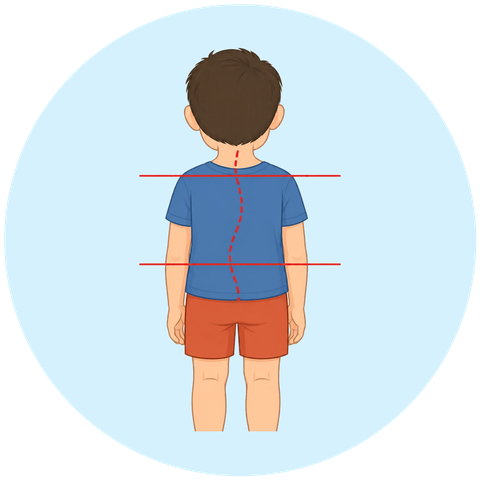

علامات سريرية
متى يحتاج الطفل إلى تقييم طبي؟
عرج مستمر أو متكرر.
ألم متكرر في القدمين أو الساقين.
صعوبة ملحوظة في المشي أو الجري.
سقوط متكرر أو اختلال واضح في التوازن.

تغيرات ملحوظة في وضعية الجسم.
تنبيه طبيالعرج المفاجئ المصحوب بحمّى أو ألم شديد، أو عدم القدرة على تحميل الوزن على الساق، يستدعي تقييمًا طبيًّا عاجلًا.